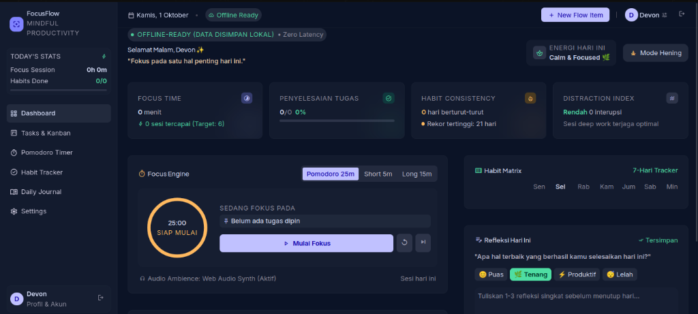

GitHub version control & collab
GitHub version control & collab 3D Modeling Blender / Spline
3D Modeling Blender / Spline IoT sensor & microcontroller
IoT sensor & microcontroller
Productivity Web — FocusFlow
2025 • Personal ProjectWeb produktivitas all-in-one untuk pelajar: Kanban tasks, Pomodoro timer, Habit tracker, dan Daily journal dalam satu dashboard dark-mode yang calming. Dibangun dengan workflow Stitch (desain) + Antigravity (coding) — offline-ready, data disimpan lokal, zero latency. Fitur unggulan: Focus Engine dengan ambience Web Audio Synth dan analisis Distraction Index.
StitchAntigravityVS CodeHTML/CSS/JSWeb Audio API